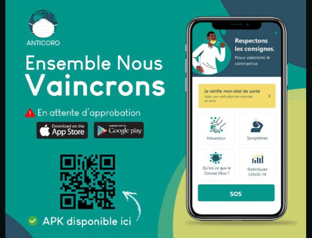

tout sur l'application contre le covid 19
Alors que la pandémie de COVID-19 menace de nombreux pays africains, des start-up planchent sur des solutions digitales pour limiter la propagation du virus. En Côte d’Ivoire, un collectif de start-up lance une application pour enrayer la propagation du Coronavirus.
Camille DUBRUELH
(CIO Mag) – La riposte s’organise pour lutter contre la pandémie de Coronavirus et l’Afrique fait une nouvelle fois la preuve de sa capacité d’innovation, notamment en situation de crise. En Côte d’Ivoire, un collectif de 10 start-up a ainsi mis sur pieds une solution digitale pour lutter contre le COVID-19, appuyé par les autorités gouvernementales.
Le collectif, créé sous l’initiative de Linda Nanan Vallée, directrice exécutive de la Fondation Jeunesse numérique, a ainsi développé Anticoro. Il s’agit d’une application dont l’objectif est de soutenir les mesures prises par l’Etat ivoirien pour limiter l’impact de l’épidémie, tant du point de vue sanitaire qu’économique.
“Tous ceux qui avaient des solutions existantes se sont regroupés. Il a été difficile de travailler de concert au départ, mais nous nous sommes rendus compte qu’en étant tous ensemble, nous allions plus vite et étions plus forts en termes de valeur ajoutée. Avec des fonctionnalités complémentaires, nous pouvons développer une solution efficace qui nous permettra d’être vraiment performant sur le terrain”, explique Ange-Frédérik Balma, CEO de Lifi-led, l’une des start-up qui participe au projet.
Tracking des patients
Dans les faits, l’application regroupe plusieurs volets. La partie « sécurité sanitaire » est développée en lien avec le dispositif Pass Santé Mousso, créé par Corine Ouattara. Ce bijou connecté à une plateforme en ligne permet de rassembler les données médicales et de prendre en charge les personnes infectées. Anticoro permet aussi aux malades potentiels d’entrer les informations sur leurs symptômes, via un questionnaire à choix multiples. Les réponses sont transmises directement à l’Institut national d’hygiène publique (INHP), l’Institut Pasteur et la Préfecture de police afin de pouvoir agir vite pour aider la personne et limiter la propagation.
Une fonctionnalité permet aussi de géolocaliser les utilisateurs émettant des requêtes et considérés comme étant à risques, afin d’éviter tout contact en attendant la confirmation des analyses. L’utilisateur a également accès à l’ensemble des recommandations et des mesures de prévention en langues locales, aux numéros d’urgence, et peut bénéficier d’une assistance vidéo ou encore d’une prise en charge psychologique, détaille Ange Bagui, de la start-up Adjemin.
Résilience économique et continuité pédagogique
D’autres fonctionnalités sont disponibles, comme la géolocalisation des centres d’approvisionnement et de produits de première nécessité. La solution comporte aussi un volet éducatif, pour parer à la fermeture des établissements scolaires. Anticoro propose ainsi des programmes de E-learning et de télétravail.
“Nous pensons que c’est une application dont l’impact peut être décisif dans la lutte contre le COVID-19 en Côte d’Ivoire, mais pas seulement. L’objectif est de dupliquer cette solution dans tous les pays africains”, conclut Ange-Frédérik Balma. L’application est désormais disponible, sur web et mobile.
Le collectif Anticoro regroupe les start-up Adjemin, BHL SARL, ISNA, Oasis Corporate, Cookie Lab, Etudesk, Lifiled, Civilchain, Byte SARL, Studio6.
https://www.anticoro.ci/
une image de l'application a installer

par @ Gbadamosi Abuduli Basiti